Poni¿ej znajduj± siê zrzuty ekranów z pierwszego uruchomienia i konfiguracji Psi. Czytaj±c opisy od pierwszego do ostatniego nauczysz siê jak dodawaæ nowe osoby do swojej listy kontaktów oraz jak konfigurowaæ transporty do innych sieci.
Powrót do Jabber FAQ
Skok do strony domowej komunikatora PSI
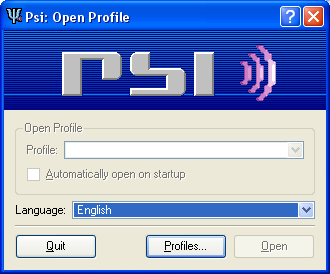
Podczas pierwszego startu programu, musimy stworzyæ sobie profil - czyli zestaw
ustawieñ dla programu. Podczas pracy mo¿na prze³±czaæ siê miêdzy wieloma profilami.
Ró¿ne profile pomagaj± nam kiedy z jednego komputera korzysta wiele osób, albo
kiedy chcemy rozdzieliæ sobie kilka w³asnych kont Jabberowych. Aby utworzyæ
pierwszy profil nale¿y klikn±æ przycisk Profiles....
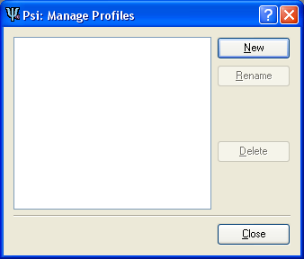
Tutaj wypisane zostan± wszytskie utworzone profile, aby utworzyæ pierwszy profil,
jak i ka¿dy nastêpny, nale¿y nacisn±æ przycisk New.
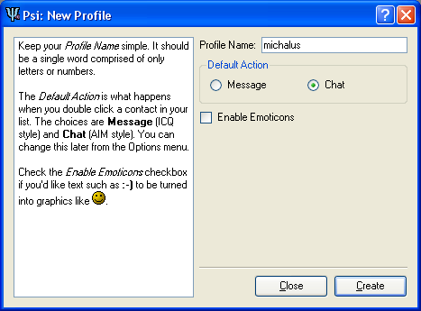
Okre¶lamy tutaj nazwê profilu, jest to wiadomo¶æ tylko dla nas - tak aby potem
mo¿na by³o je rozró¿niæ. Nale¿y j± wpisaæ w Profile Name, nastêpnie
okre¶liæ podstawow± akcje, wykonan± podczas klikniêcia na kontakt - czy zostanie
otworzone okienko rozmowy Chat, czy zostanie pos³ana pojedyñcza
wiadomo¶æ Message. Zaznaczamy tak¿e czy Psi ma zamieniaæ wszelkie
kombinacje takie jak :-) na graficzne emoticony. Wszystkie ustawienia
mo¿na zmieniæ pó¼niej. Na koniec klikamy przycisk Create.
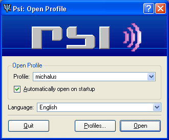
Kiedy ju¿ stworzymy profil, wybieramy go z pola combo-box, je¿eli chcemy aby
okienko wyboru otwiera³o nam siê za ka¿dym razem odhaczamy Automatically
open on startup, je¿eli dysponujemy odpowiedni± wersj± programu mo¿emy
tutaj tak¿e zmieniæ wersje jêzykow± w polu combo-box Language. Na koniec otwieramy
profil przyciskiem Open.
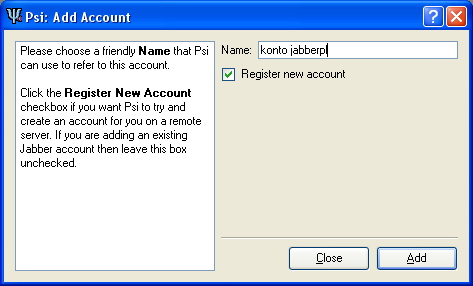
Teraz przechodzimy do w³a¶ciwej koniguracji kont. Poniewa¿ w ka¿dym profilu
mo¿emy mieæ skonfigurowanych kilka kont, znów nazywamy je tak aby w przysz³o¶ci
mo¿na by³o je od siebie ³atwo odró¿niæ. Nazwê wpisujemy w polu Name,
zaznaczamy tak¿e pole Register new account - w celu utworzenia nowego konta
na serwerze. Je¿eli mamy ju¿ takie to oczywi¶cie zostawiamy pole puste i wpisujemy
jego konfiguracje w nastêpnym kroku. Na koniec naciskamy przycisk Add.
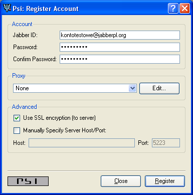
W polu Jabber ID wpisujemy jakie konto chcemy stworzyæ. Konta podawane s± w
formacie identyfikator na danym serwerze. Je¿eli wybierasz serwer jabberpl.org
oraz identyfikator kontotestowe to wpisujemy Jabber ID tak jak na obrazku kontotestowe@jabberpl.org.
Dodatkowo wpisujemy swoje has³o. Warto zaznaczyæ szyfrowanie po³±czenia pomiêdzy
naszym komputerem a serwerem Use SSL encryption (to server). Na koniec potwierdzamy
wszystko przyciskiem Register.
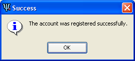
Je¿eli wszytsko siê uda³o otrzymamy taki komunikat. Je¿eli siê nie uda³o to mo¿liwe ¿e dany identyfikator jest ju¿ na tym serwerze zajêty, albo wpisali¶my ¼le has³o.
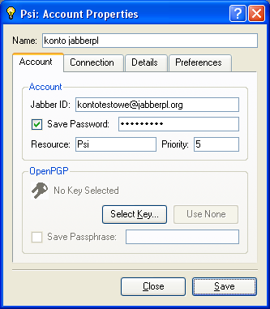
Tutaj ustawiamy szczegó³y dotycz±ce konfiguracji konta. W polu Name
mamy nasz± przyjazn± nazwe konta, ponie¿ej wpisany wcze¶niej Jabber ID, oraz
has³o. Warto okre¶liæ nazwe w polu Rescource oraz priorytet w polu
Priority. Konto mo¿e byæ uruchomione na ró¿nych komputerach. Wiadomo¶ci
dochodz± wtedy do komputera gdzie ustawiony jest najwy¿szy priorytet. Przez
nazwanie Rescource czyli zasobu, pozwalamy zobaczyæ innym gdzie
jeste¶my. Mo¿na przyk³adowo wpisaæ Dom, a priorytet zostawiæ tak
jak jest. Wtedy podczas konfigurowania komunikatora w pracy, wpiszemy jako Rescource
przyk³adowo Praca, dodatkowo ustawiaj±c wy¿szy priorytet po³±czenia.
Podczas takiego ustawienia, nawet wtedy kiedy nasz domowy komputer jest ci±gle
w³±czony, a nasz Psi zalogowany, po³±czenie z pracy zostanie do³±czone jako
drugie, bez roz³±czania naszego domowego po³±czenia, i wszelkie wiadomo¶ci na
czas aktywnego po³±czenia z prac± bêd± trafiac do pracy.
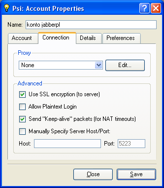
Dalsze opcje dotycz±ce po³±czenia. Je¿eli siê nie znamy to warto ustawiæ to co jest na powy¿szym screenie. Dodatkowo nale¿y zwróciæ czy nie powinni¶my ustawiæ Proxy - je¿eli taki mamy.
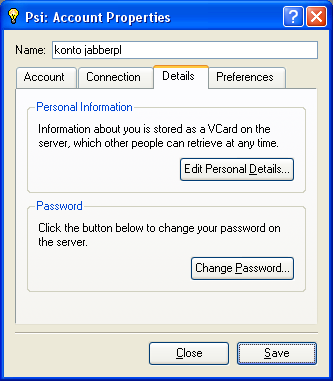
Tutaj mo¿na zmieniæ has³o, przyciskiem Change Password, oraz co pokazane jest
szczegó³owo ponie¿ej wpisaæ to co inni u¿ytkownicy bêd± widzieæ jako dane o
nas. Aby wpisaæ dane teraz nale¿y nacisn±æ Edit Personal Details....
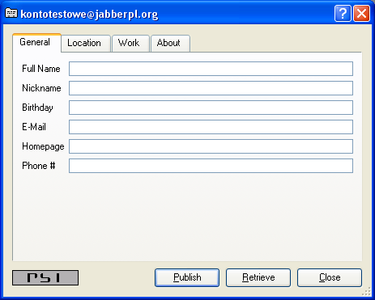
W tym oknie wpisujemy te dane, które inni u¿ytkownicy bêd± mogli zobaczyæ jako nasz opis.
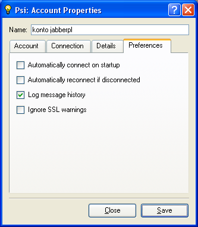
Ostatnia zak³adka ustawieñ konta, w której mo¿emy ustaliæ czy po w³±czeniu
Psi ma on automatycznie siê zalogowaæ i po³±czyæ z serwerem Automatically
connect on startup. Nastêpnie czy po zerwaniu po³±czenia z serwerem ma
on automatycznie próbowaæ nawi±zaæ ponownie po³±czenie Automatically reconnect
if disconnected. Czy dla tego konta ma byæ zapisywana historia Log
message history. Na koniec Ignore SSL warnings podczas gdy
³±czymy siê z serwerem z zaznaczon± opcj± szyfrowania SSL, a nie posiadamy w
katalogu /certs odpowiedniego certyfikatu. Jak ¶ci±gn±æ certyfikat
opisane jest tutaj.
Sens ostrzegania przed nieposiadaniem certyfikatu ma zabezpieczyæ nas przed
po³±czeniem do fa³szywego serwera i wy³udzenia od nas poufnych danych takich
jak na przyk³ad has³o. (zobacz spoofing)
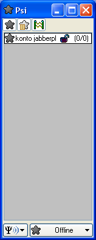
Po skonfigurowaniu wszystkiego Psi uruchomi nam siê i bêdzie wygl±da³o podobnie
do powy¿szego obrazka. Widaæ ¿e mamy skonfigurowane jedno konto - symbolizuje
to bia³a belka z przyjazn± nazw± naszego konta, któr± wpisali¶my w opcjach.
Dodatkowo widaæ, ¿e nie jeste¶my pod³±czeni do serwera - szara gwiazdka. Aby
pod³±czyæ siê do serwera nale¿y wybraæ z dolnego menu, klikaj±c na Offline i
zmieniæ je z listy na Online.
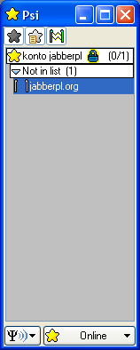
Po pod³±czeniu do serwera, co symbolizuje ¿ó³ta gwiazdka, na naszej li¶cie, je¿eli zarejestrowali¶my siê na serwerze jabberpl.org, powinno pojawiæ siê migaj±ce czerwon± gwiazdk± zdarzenie. Wszelkie wiadomo¶ci, które do nas dochodz± otwieramy klikaj±c na nie dwukrotnie. Tutaj otrzymali¶my wiadomo¶æ systemow± od serwera. Nie jest to regu³±, ale zazwyczaj po stworzeniu nowego konta jest do nas wysy³ana taka powitalna wiadomo¶æ. Jak widaæ poni¿ej zawarte s± tam podstawowe informacje o serwerze.
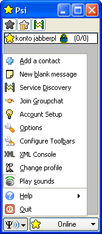
Aby dodaæ u¿ytkownika, nale¿y klikn±æ na znaczek Psi na dole, a z rozwijanego
menu wybraæ Add a contact. Przejdziemy wtedy od razu do takiego
okienka. Samo dodawanie u¿ytkowników jest proste. Jednak ¿eby dodaæ u¿ytkownika
z innej sieci, dla przyk³adu niech bedzie to sieæ GG, nale¿y najpierw zarejestrowaæ
odpowiedni transport. Poniewa¿ narazie nie wiemy jakie transporty s± zarejestrowane
na naszym przyk³adowym serwerze jabberpl.org, musimy z g³ównego menu wybraæ
Service Discovery.
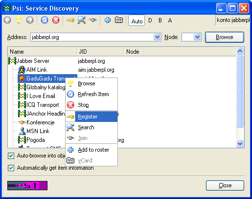
Psi poka¿e nam co oferuje nam serwer, na którym aktualnie mamy zarejestrowane
konto. Na powy¿szym screenie widaæ ró¿ne transporty do komunikacji z innymi
sieciami: AIM Link, GaduGadu Transport czy MSN Link. Oraz inne us³ugi takie
jak Pogoda, Konferencje czy Globalny katalog. Poniewa¿ chcemy zarejestrowaæ
siê w transporcie GG, wybieramy go z listy, prawym klikniêciem rozwijamy menu
i wybieramy Register. W przysz³o¶ci gdy bêdziemy chcieli poszukaæ u¿ytkownika
GG, tak¿e tutaj wybierzemy Search.
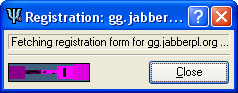
Gdy GG nie zaliczy³o kolejnego pada powinni¶my otrzymaæ informacje, ¿e ¶ci±gany jest dla nas formularz rejestracyjny. Mo¿e to chwilke potrwaæ.
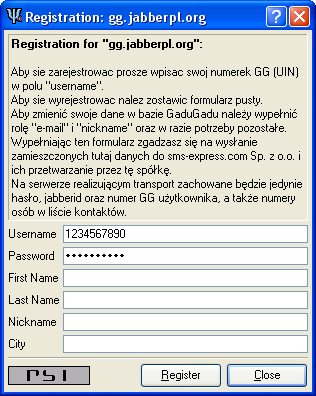
Po chwilce zobaczymy takie okienko, gdzie aby siê zarejestrowaæ nale¿y wpisaæ
w pole Username numer GG, a w pole Password has³o
dla tego numeru. Je¿eli nie chcemy zmieniac pozosta³ych wpisów, inne pola pozostawiamy
puste. Transport nie umo¿liwia rejestracji nowego u¿ytkownika w danej sieci,
nale¿y podaæ istniej±cy numer GG, wraz z poprawnym has³em.
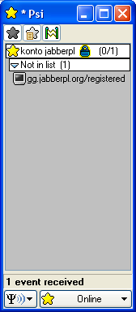
Je¿eli wszytsko posz³o zgodnie z planem, po chwili otrzymamy potwierdzenie naszej rejestracji w transporcie. Tak jak poprzednio zdarzenie (czerwony migaj±cy telewizorek) otwieramy klikaj±c na nie.
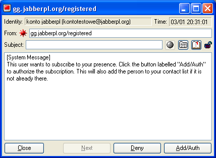
Aby wszystko dzia³a³o nale¿y udzieliæ autoryzacji transportowi GG przyciskiem
Add/Auth. Postêpujemy tak tak¿e wtedy kiedy inna osoba próbuje
dodaæ nas do swojej listy kontaktów. Przez autoryzacje nale¿y rozumieæ pozwolenie
na dodanie siebie do listy kontaktów osoby, która o to prosi. Osoba, której
tej autoryzacji nie udzielimy, nie zostanie poinformowana o naszym statusie.
Nasza osoba bedzie widoczna jako zawsze od³aczona od sieci. Je¿eli chcemu siê
wyrejestrowaæ z transportu - przyk³adowo nie chcemy ju¿ korzystaæ z sieci GG,
nale¿y to zrobiæ rêcznie w ten sam sposób jak podczas rejestracji. Tym razem
nale¿y poprostu zarejestrowaæ pusty formularz.
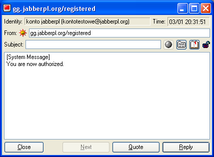
Po naszej autoryzacji, transport odpowiada ¿e tak¿e nas autoryzowa³. Wiadomo¶æ czysto formalna, poniewa¿ transporty autoryzuj± ka¿d± osobê, która o to poprosi. Jednak taki komunikat oznacza, ¿e wszystkie czynnosci wykonali¶my prawid³owo.
Teraz czas na pierwszego dodanego u¿ytkownika.
Na za³±czonych screenach dodawany jest przyk³adowy u¿ytkownik sieci GG, jednak
w analogiczny sposób dodajemy ka¿dy kontakt. Wybieramy z pola combo-box Service
odpowiedni zarejestrowany transport. Na poni¿szym sreenie zosta³ wybrany wcze¶niej
zarejestrowany transport GG. Nastêpnie wpisujemy numer GG w pole tekstowe i
naciskamy przycisk Get Jabber ID. Nastêpnie mo¿emy zamieniæ w polu
Nickname wy¶wietlan± nazwe tego u¿ytkownika z bezdusznego numerka
na jak±¶ bardziej przyjazn±. Zostawiamy zaznaczony checkbox Request authorization
when adding, jest to automatyczna pro¶b± o autoryzacjê dla nowo dodanego
u¿ytkownika. Poniewa¿ sieæ GG nie obs³uguje autoryzacji, zostanie ona przydzielona
automatycznie. Mo¿emy tak¿e przydzielic u¿ytkownika do jakiej¶ grupy, wybieraj±c
j± w polu combobox Group. Grupy u¿ytkowników s³u¿± do prostszego
zarz±dzania kontaktami na naszej li¶cie kontaktów. Przy du¿ej ilo¶ci nieraz
du¿o ³atwiej jest je ogarn±æ rozdzielaj±c przyk³adowo kontakty z sieci GG od
kontaktów ¶ci¶le Jabberowych. Kiedy wszystko jest ju¿ gotowe, dodajemy u¿ytkownika
klikaj±æ na przycisk Add.
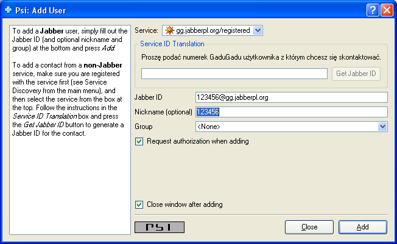
Je¿eli wszytsko wykonali¶my prawid³owo nowo dodany kontakt powinien przys³aæ nam jego autoryzacje. Jak ju¿ wspomnia³em wcze¶niej w sieci GG zostaje ona przydzielana automatycznie. Dla Jabbera system oczekuje a¿ dany u¿ytkownik nam jej udzieli.
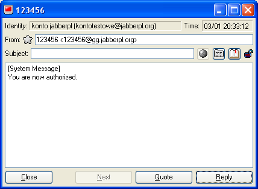
Na koniec, okienko komunikatora powinno wygl±daæ w ten sposób. Jeden nowo dodany u¿ytkownik w podstawowej grupue General, poni¿ej jeden zarejestrowany transport do sieci GG. Jeste¶my pod³±czeni zarówno do sieci GG, co symbolizuje ¿ó³te s³oneczko transportu, jak i do Jabbera, co symbolizuje ¿ó³ta gwiazdka na dole okienka.
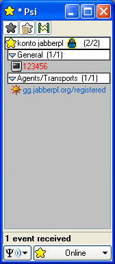
(to do)
(to do)